软件使用指南
表单浏览器初始化
表单浏览器初始化
登录后点击主界面功能入口：填表浏览器登录进入页面
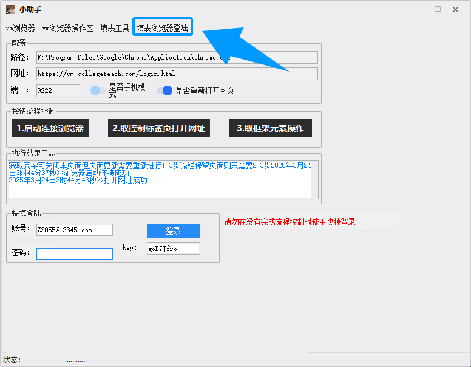浏览器配置
转到页面勾选「是否重新打开网页」选项，随后点击启动浏览器按钮
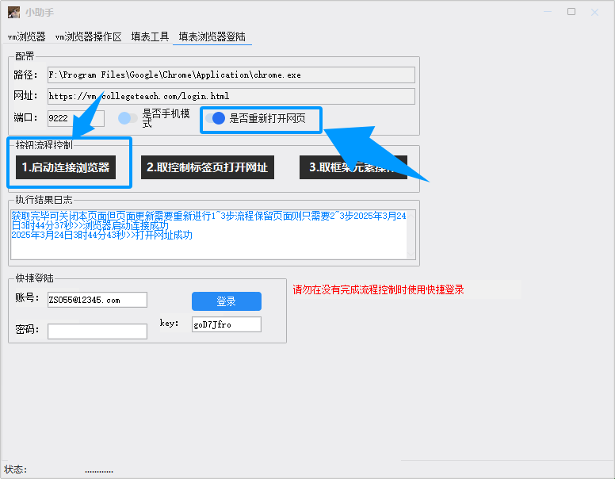浏览器启动
等待浏览器启动并加载完毕，界面显示完整浏览器框架
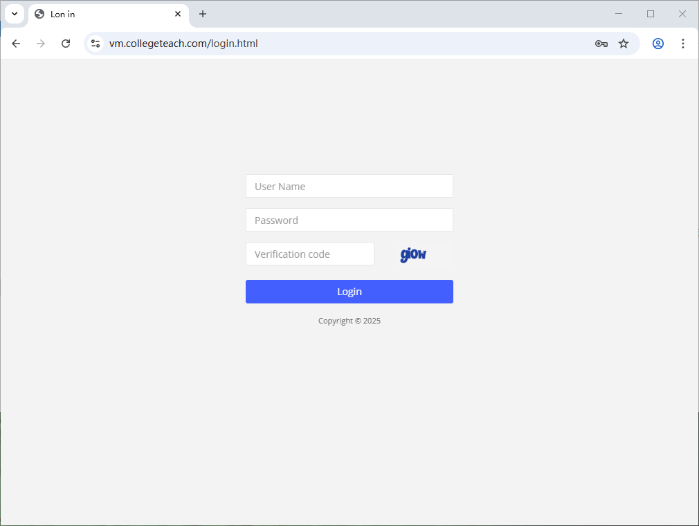功能操作
依次点击「获取标签页」→「获取框架」按钮，待执行结果日志输出显示框架获取和网页打开成功后，即可进行登录操作
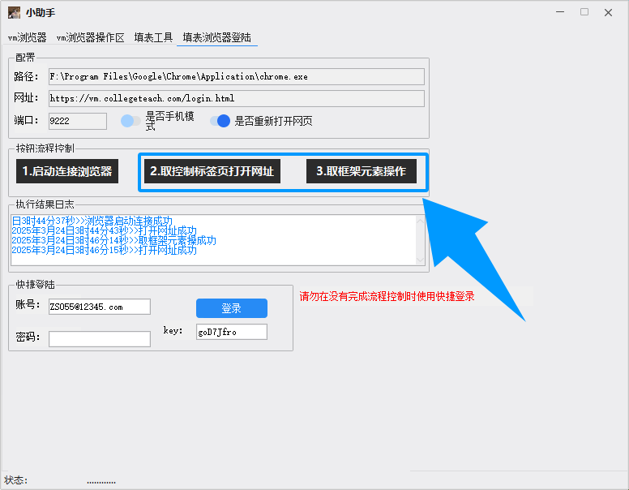请确保网络连接稳定，页面加载过程请勿进行其他操作
开始监控
进行此操作前请一定确保完成表单浏览器初始化指引流程
浏览器主程序启动
首先打开vmlogin指纹浏览器主程序，点击启动按钮初始化环境
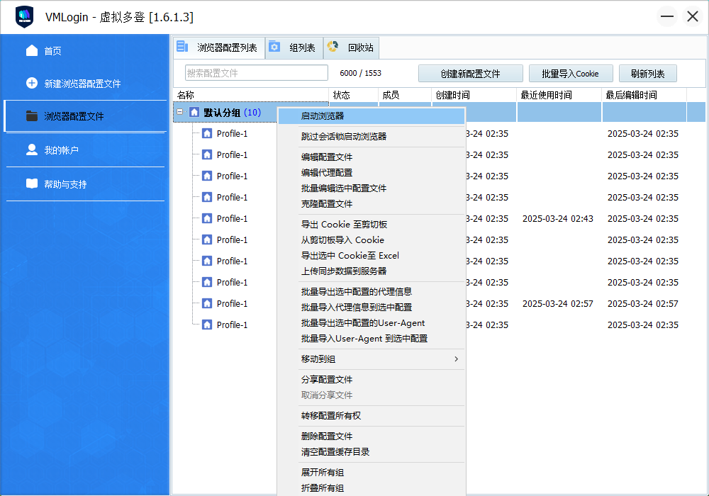任务界面配置
转到我的任务界面，确保页面处于图示状态并勾选「未完成」选项，点击搜索按钮
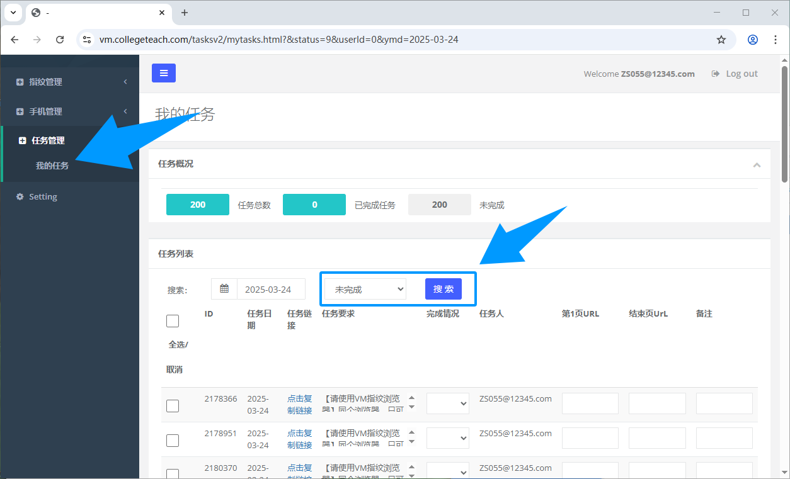连接拉取操作
返回小助手vm浏览器分类页面，点击「批量拉取连接」按钮获取任务链接
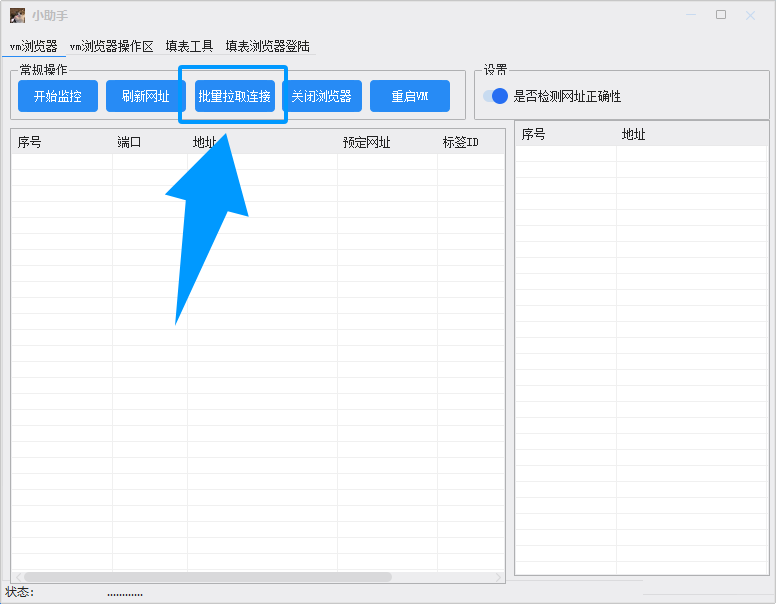监控执行流程
任务页面完成ID0-30分配后，点击「开始监控」按钮等待详细信息生成
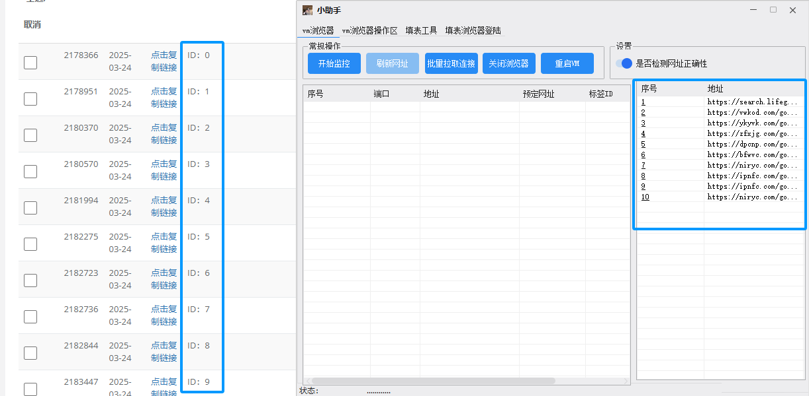监控过程请保持网络稳定，勿操作其他界面
批量填写第1页URL
进行此操作前请一定确保完成开始监控版块的指引流程
页面加载检查
等待浏览器页面加载完毕如图所示
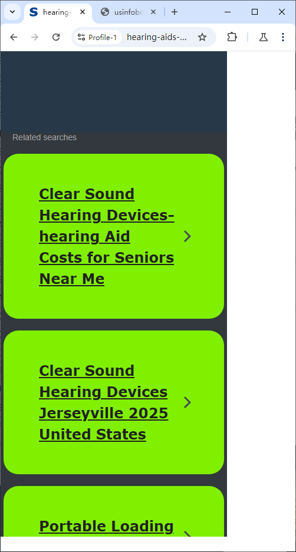网址刷新操作
确保页面都处于上一个步骤中配图中的样式点击小助手中的刷新网址，点击完毕后地址栏内容改变
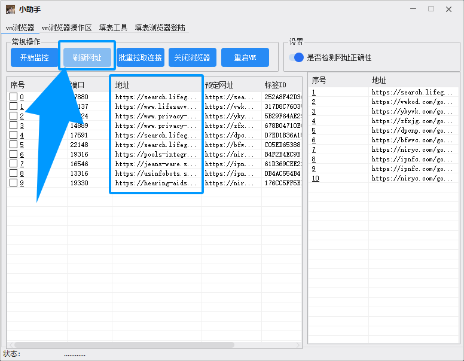异常页面处理
如果出现问题页面如无法加载，勾选问题页面对应的浏览器，序号对应任务栏0-9图标
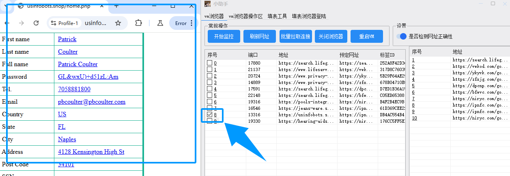网址分配执行
转到填表工具类页面点击分配第一个获取的网址，在弹出的窗口中直接点击确定，如果没有勾选异常页面则无需进行分配随后点击填表_第①个按钮
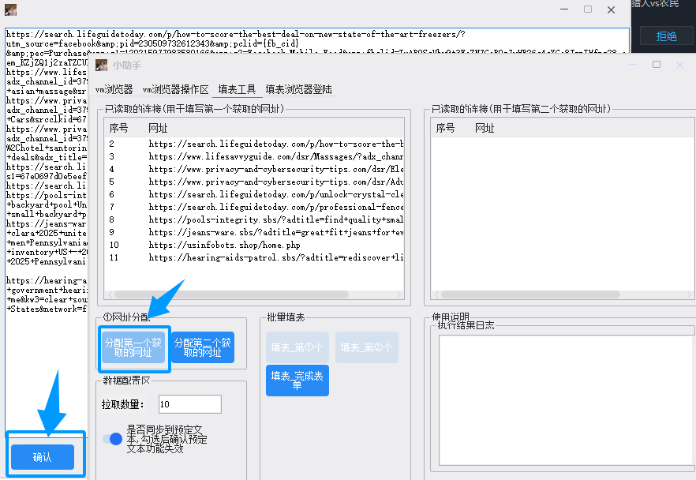执行结果
点击填表按钮后会依次进行填写网址操作，并且跳过已勾选的问题页面
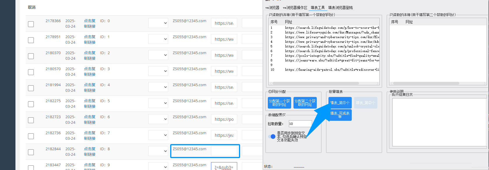问题页面自行判断,图示只是举例
批量进入广告页面
进行此操作前请一定确保完成开始监控版块的指引流程
首次广告入口
确保浏览器加载完成,并处于此界面
点击小助手首次进入广告按钮
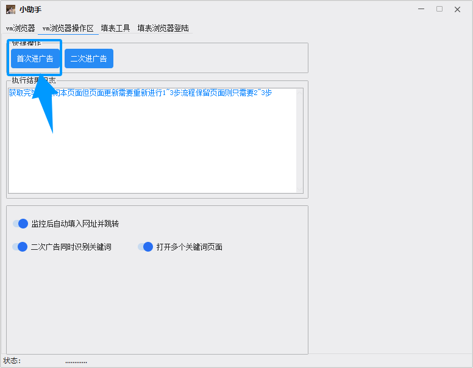二次广告入口
等待页面加载完成如图所示,程序默认进入蓝色方框内的广告界面：
蓝色方框: 默认进入的广告页面
红色方框：启用关键词匹配广告
黄色方框：开启多广告页面模式
点击二次进入广告按钮
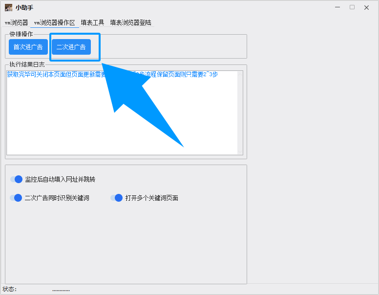可选功能配置
程序默认进入蓝色方框内的广告界面：
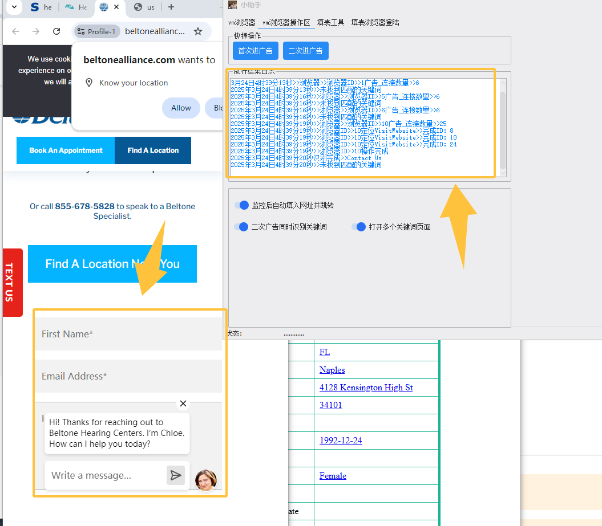广告页面处理
安装专属浏览器扩展可自动定位文本框：
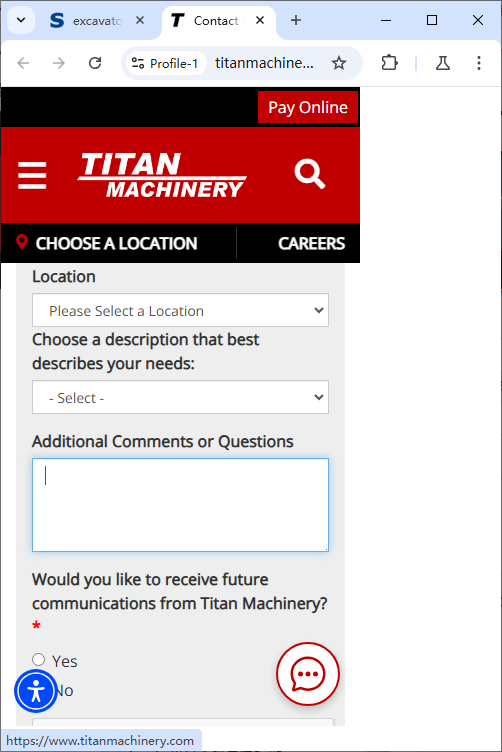未安装扩展时可手动切换页面快速查找填写页面：
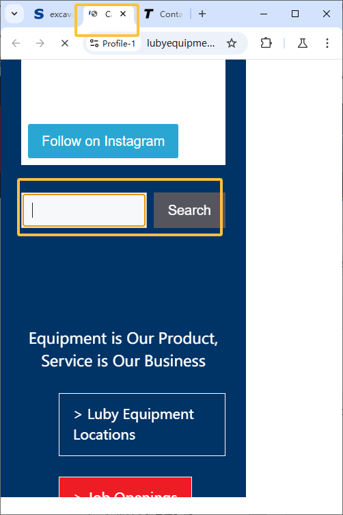表单完成操作
在填表工具页面点击填表_完成表单按钮：
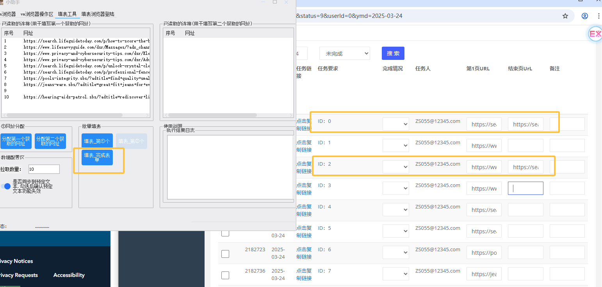系统会自动识别1、2链接填写状态
• 已填写：执行完成操作
• 未填写：自动跳过
下载中心
软件下载
最新版本客户端下载： 点击下载
更新内容：
• 更新最新IP池
• 强制使用最新内核
• 更新最新页面
• 修复部分BUG
• 新增多广告页面模式
• 新增关键词匹配广告
• 新增广告页面自动识别
• 以下是扩展更新内容
• 新增广告页面自动填写
• 新增广告页面自动提交
• 新增广告页面自动关闭
• 新增广告页面自动刷新
• 新增广告页面自动跳转
下载后请解压到非系统盘目录使用